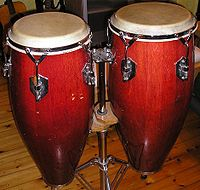

This is a list of membranophones used in the Caribbean music area, including the islands of the Caribbean Sea, as well as the musics of Guyana, Suriname, French Guiana, Belize, Garifuna music, and Bermuda. It only includes membranophones that are indigenous to the local music area or are a vital and long-standing part of local culture. It does not include membranophones that are, for example, a part of Western style orchestras, nor does it include trap sets and other common membranophones used in popular music recordings of many genres across the world. Almost all membranophones are drums and percussion instruments.

The Hornbostel-Sachs number is given after each instrument.